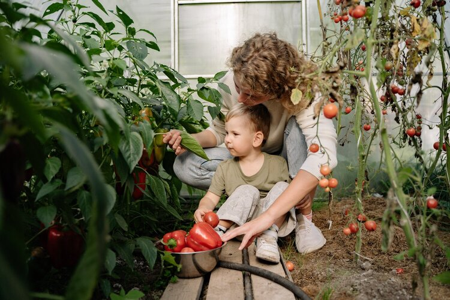

What is our story
Being a young mother of two little girls, I found it difficult to get healthy fruits and veggies in my kids. It seemed that all my kids wanted was snacks, to only be hungry 30 minutes later. I wanted to make healthier options for my kids that involved more items from the earth, namely more fruits and veggies. I started making "green smoothies" in an effort to sneak healthier items into my childrens daily consumption. During our health journey as a family, income was low and prevented me from buying off season fruit, which was more costly. I started doing favors for neighbors in exchange for the fruit that grew on their trees. I remember coming home with laundry baskets full of lemons and grapefruits. We made a variety of smoothies and shared them with friends. Word got out about our smoothie making and soon was born, Berry Scoop, by Bountiful foods. The earth provides so much flavor and nutrition for our bodies We want to make the fruits and veggies available in a more nutrition dense and palatable way that our body can easily absorb. We break down the fruit and veggies so your body can absorb the nutrition faster and hope you enjoy it as well.